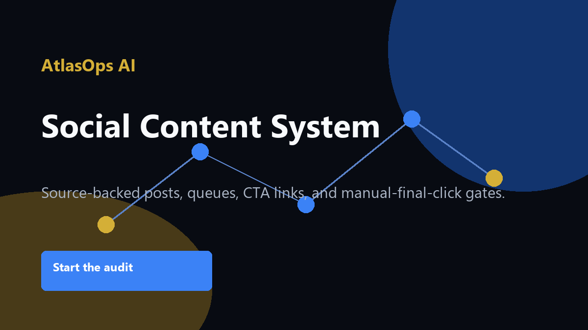

Common problems
- Generic posts
- No source tracking
- Duplicate content
- No posting verification
Operators who want a daily content machine without unsupported claims.

Source-backed post templates, queue, duplicate guard, UTM links, and manual-final-click workflow.
Quote-based. Scope is confirmed before implementation work begins.
Source-backed post templates, queue, duplicate guard, UTM links, and manual-final-click workflow.
No fake guarantees: AtlasOps makes practical recommendations and delivery assets, but does not promise revenue, traffic, platform approval, or legal/financial outcomes.